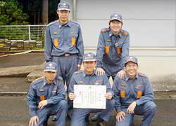

2012年6月17日（日）第25回埼玉西部支部操法大会が行われました。小型ポンプの部優勝の第11分団2部が第27回埼玉県消防操法大会出場します。埼玉県消防操法大会は2012年8月25日（土）埼玉県消防学校で行われる予定です。
◆小型ポンプ の部
| 優勝 |
飯能消防団 第11分団2部 |
川口 隆利 (かわぐちたかとし) |
嶋田 賢二郎 （しまだけんじろう） |
町田 純一 （まちだじゅんいち） |
加藤 忠 （かとうただし） |
岩本 研二 （いわもとけんじ） |
| 準優勝 |
飯能消防団 第10分団2部1班 |
清原 重明 （きよはらしげあき） |
嶋田 彰人 （しまだあきひと） |
吉田 昌弘 （よしだまさひろ） |
小林 健 （こばやしたけし） |
森田 明利 （もりたあきとし） |
| 第3位 |
飯能消防団 第9分団2部 |
石田 隆之 （いしだたかゆき） |
山田 和浩 （やまだかずひろ） |
木村 伸央 （きむらのぶお） |
石田 良介 （いしだりょうすけ） |
岩田 敦史 （いわたあつし） |
 第11分団2部 第11分団2部 |
 第10分団2部 1班 第10分団2部 1班 |
第3位 第9分団2部 |
◆ポンプ車 の部
| 優勝 |
日高市消防団 第3分団 |
関口 政信 (せきぐちまさのぶ) |
昇 哲也 （のぼりてつや） |
高橋 裕矢 （たかはしゆうや） |
杉田 義典 （すぎたよしのり） |
堀口 豊 （ほりぐちゆたか） |
斎野 将斗 （さいのまさと） |
| 準優勝 |
飯能消防団 第10分団 |
高野 広太 （たかのこうた） |
鶴沢 翔 （つるさわしょう） |
加藤 寿和 （かとうひさかず） |
神山 卓也 （かみやまたくや） |
神野川 宣仁 （かのかわよしひと） |
萩原 唯之 （はぎわらただし） |
| 第3位 |
飯能消防団 第5分団 |
榎本 哲也 （えのもとてつや） |
藤野 亮典 （ふじのあきのり） |
大串 友宏 （おおぐしともひろ） |
山﨑 圭一郎 （やまざきけいいちろう） |
清水 亮 （しみずりょう） |
中村 健 （なかむらけん） |
|  | ||
|
日高消防団 第3分団 |
第10分団 |
第3位 第5分団 |